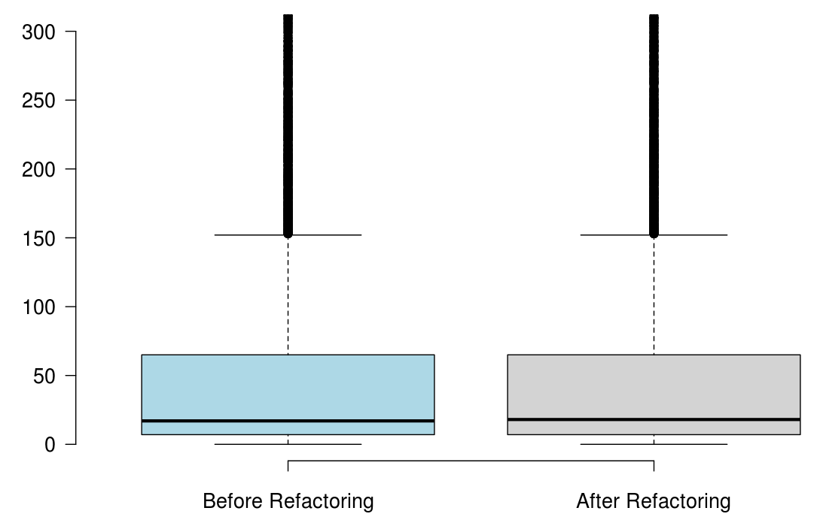

LOC

CC

RQ1: Do developers refactor code differently for the purpose of improving reusability?
We have shown that the distribution of refactoring types, applied in the context of reusability, is different from the distribution of refactoring types in mainstream development. In the refactorings per- formed to improve reusability, files are subject to more design level types of refactorings (e.g., Move Method, Extract Method) in general, and inheritance-related refactorings (e.g., Pull-up Method, Pull-up At- tribute) in particular, while in other refactorings, files tend to undergo more renames (e.g., Rename Method, Rename Variable) and data type changes (e.g., Change Variable Type) to identifiers. Reusability refactorings heavily impact, high-level code elements, such as packages, classes, and methods, while typical refactorings, impact all code elements, including identifiers, and parameters.
RQ2: What is the impact of reusability refactorings on structural metrics?
When developers refactor their code for the purpose of reusability, we found that the number of methods significantly increased, but the majority of the state-of-the-art metrics did not capture any improvement, or captured non significant improvement.